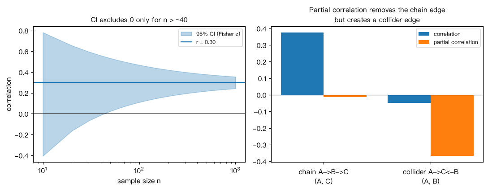

Example06 / 11
样本量、Fisher z 置信区间，以及相关与偏相关的差别
- 用 Fisher z 计算 r 的 95% 置信区间，展示样本量对区间宽度的影响；
- 模拟链式结构 A -> B -> C，A 与 C 之间没有直接作用：相关网络会连出 A–C 边，偏相关网络不会；
- 模拟对撞结构 A -> C <- B：A 与 B 本无关联，控制 C 后反而出现偏相关（对撞偏倚）。
Output输出图

Output文字输出
r=0.30, n= 30: 95% CI = [-0.07, 0.60]，宽度 0.66 r=0.30, n= 100: 95% CI = [0.11, 0.47]，宽度 0.36 r=0.30, n= 300: 95% CI = [0.19, 0.40]，宽度 0.21 r=0.30, n=1000: 95% CI = [0.24, 0.36]，宽度 0.11 链式 A->B->C 相关 r(A,C) = 0.38，偏相关 = -0.01 对撞 A->C<-B 相关 r(A,B) = -0.05，偏相关 = -0.37
Code代码
# (1) 用 Fisher z 计算 r 的 95% 置信区间，展示样本量对区间宽度的影响；
# (2) 模拟链式结构 A -> B -> C，A 与 C 之间没有直接作用：相关网络会连出 A–C 边，偏相关网络不会；
# (3) 模拟对撞结构 A -> C <- B：A 与 B 本无关联，控制 C 后反而出现偏相关（对撞偏倚）。
import numpy as np
def fisher_ci(r, n, level=0.95):
from scipy.stats import norm
z, se = np.arctanh(r), 1 / np.sqrt(n - 3)
q = norm.ppf(0.5 + level / 2)
return np.tanh(z - q * se), np.tanh(z + q * se)
for n in (30, 100, 300, 1000):
lo, hi = fisher_ci(0.3, n)
print(f"r=0.30, n={n:4d}: 95% CI = [{lo:.2f}, {hi:.2f}]，宽度 {hi - lo:.2f}")
def pcor(X):
P = np.linalg.inv(np.cov(X, rowvar=False))
d = np.sqrt(np.diag(P))
W = -P / np.outer(d, d)
np.fill_diagonal(W, 1)
return W
rng = np.random.default_rng(6)
n = 2000
a = rng.standard_normal(n)
b = 0.7 * a + rng.standard_normal(n)
c = 0.7 * b + rng.standard_normal(n)
X = np.c_[a, b, c]
print("链式 A->B->C 相关 r(A,C) = %.2f，偏相关 = %.2f" % (np.corrcoef(X, rowvar=False)[0, 2], pcor(X)[0, 2]))
chain = (np.corrcoef(X, rowvar=False)[0, 2], pcor(X)[0, 2])
a = rng.standard_normal(n)
b = rng.standard_normal(n)
c = 0.7 * a + 0.7 * b + rng.standard_normal(n)
X = np.c_[a, b, c]
print("对撞 A->C<-B 相关 r(A,B) = %.2f，偏相关 = %.2f" % (np.corrcoef(X, rowvar=False)[0, 1], pcor(X)[0, 1]))
collider = (np.corrcoef(X, rowvar=False)[0, 1], pcor(X)[0, 1])
# 作图：r=0.3 的 95% CI 随样本量变化；链式与对撞结构中相关与偏相关的差别
import matplotlib.pyplot as plt
fig, ax = plt.subplots(1, 2, figsize=(10, 4))
ns = np.arange(10, 1001, 10)
lo_, hi_ = fisher_ci(0.3, ns)
ax[0].fill_between(ns, lo_, hi_, color="C0", alpha=0.3, label="95% CI (Fisher z)")
ax[0].axhline(0.3, color="C0", lw=1.5, label="r = 0.30"); ax[0].axhline(0, color="k", lw=0.8)
ax[0].set_xscale("log"); ax[0].set_xlabel("sample size n"); ax[0].set_ylabel("correlation")
ax[0].set_title("CI excludes 0 only for n > ~40", fontsize=10); ax[0].legend(fontsize=8)
x = np.arange(2)
ax[1].bar(x - 0.2, [chain[0], collider[0]], 0.4, label="correlation")
ax[1].bar(x + 0.2, [chain[1], collider[1]], 0.4, label="partial correlation")
ax[1].set_xticks(x); ax[1].set_xticklabels(["chain A->B->C\n(A, C)", "collider A->C<-B\n(A, B)"])
ax[1].axhline(0, color="k", lw=0.8); ax[1].legend(fontsize=8)
ax[1].set_title("Partial correlation removes the chain edge\nbut creates a collider edge", fontsize=10)
plt.tight_layout(); plt.show()Run在浏览器中运行
首次加载 Python 环境约需 20–40 秒；可以修改参数后重新运行。